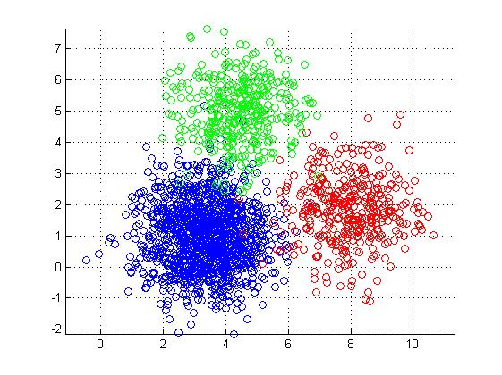
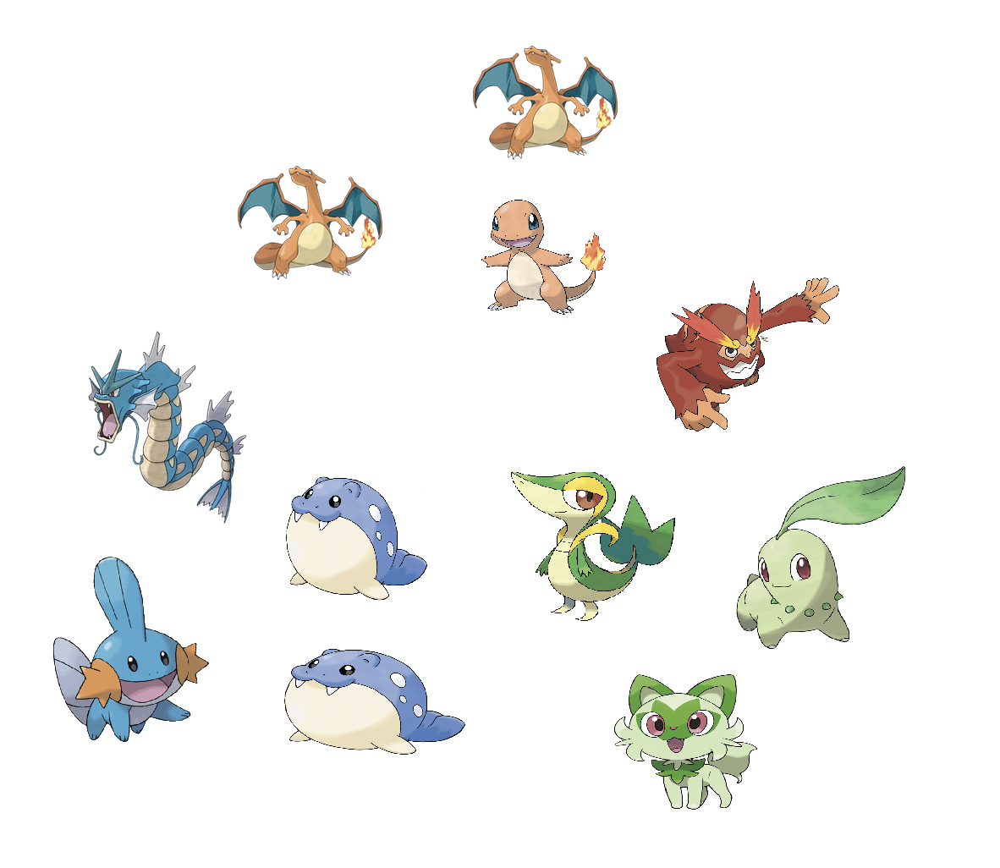
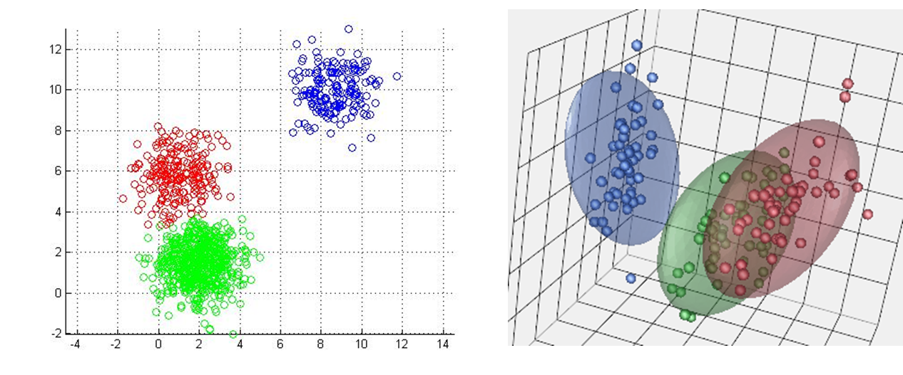
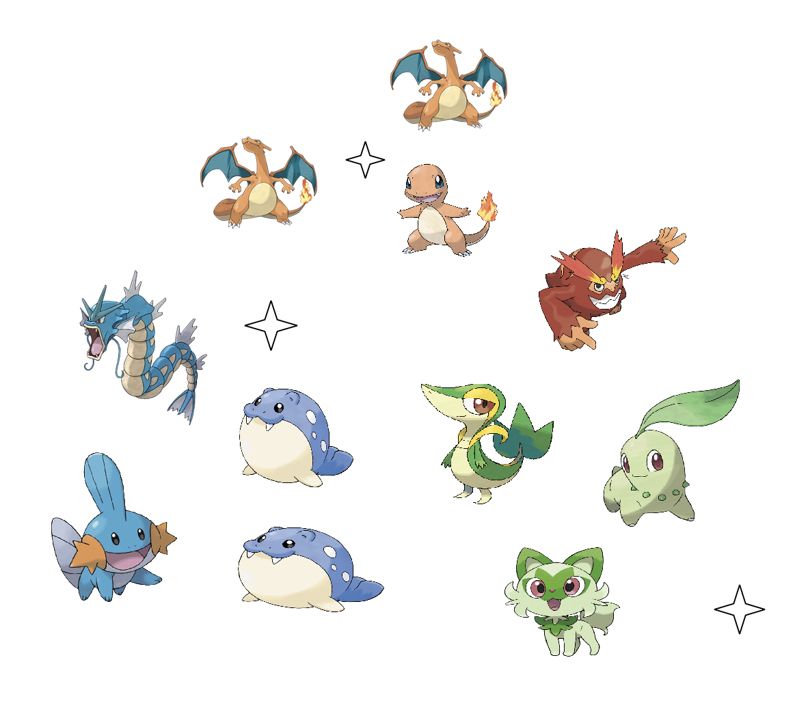
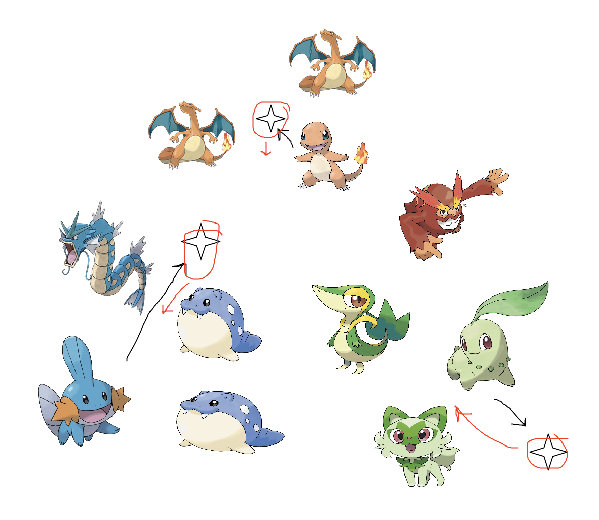
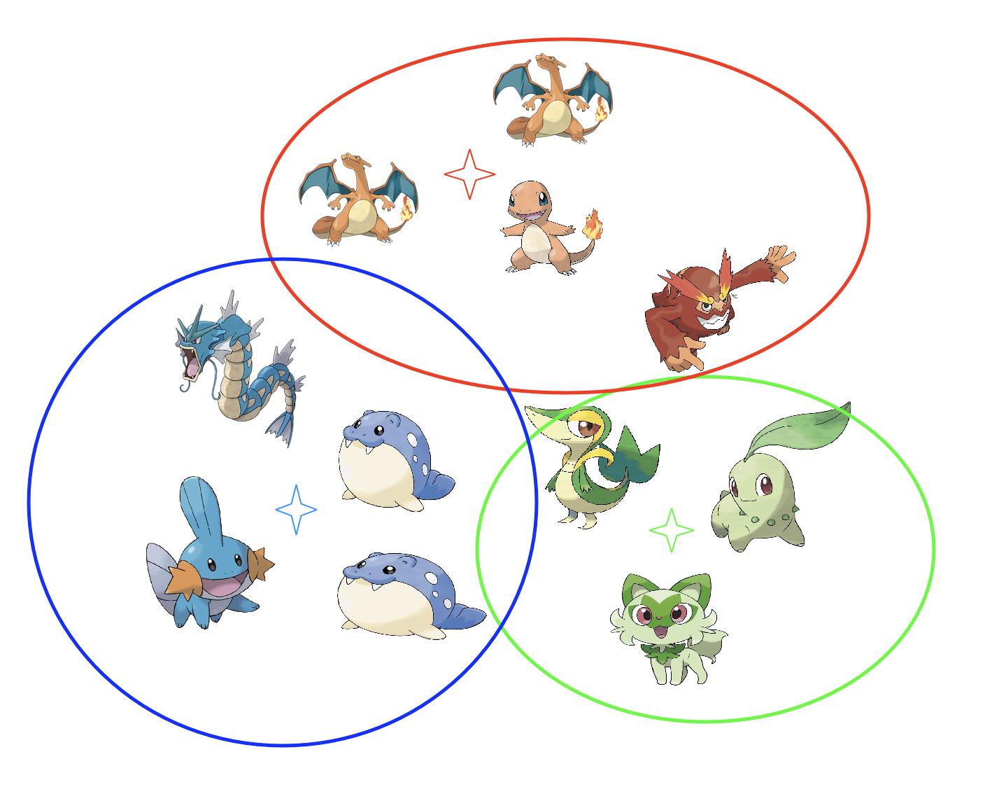
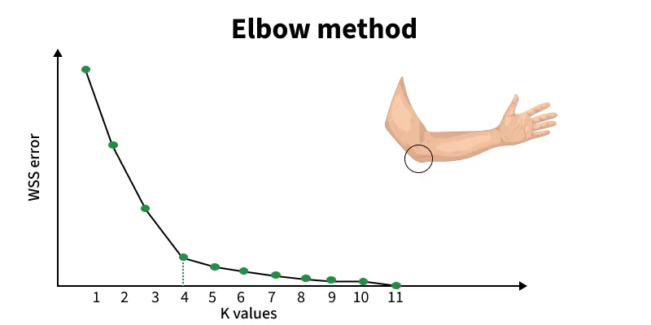
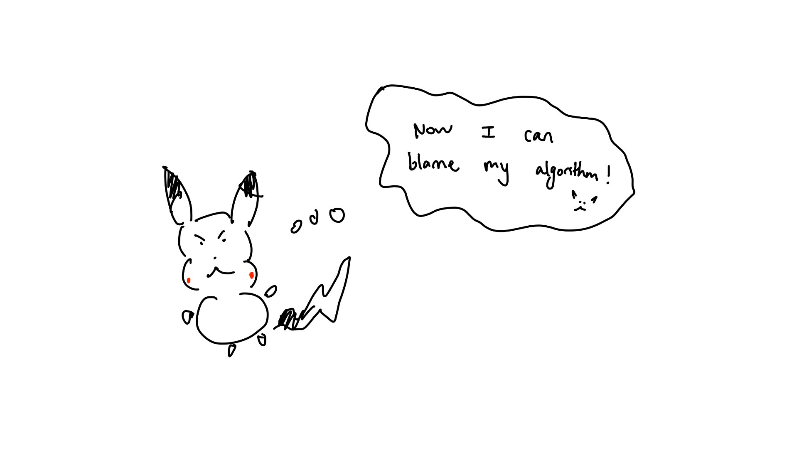

Pikachu encounters lots of Pokemon on a day to day basis. However, he doesn't always know what that Pokemon's type is and makes a lot of false stereotypical assumptions. Fire? Water? Leaf? That's too many to memorize and they are all too similar. He decides it's time to build a clustering algorithm to do this for him algorithmically. "The computer will be the racist one! Not me!" He decides.
One of the most popular clustering algorithms is K-means clustering. At a high level, it assigns points to the closest cluster $c_j$ using some distance function (Minkowski, Hamming, Edit, L1, L2, etc.). When points are all assigned, we will have created $k$ groups. Mathematically, we need to optimize this objective function: $$ \min \sum_i^N \text{dist}(x_i) $$ Commonly, we choose L2 norm (euclidean distance) as our distance function. $$ \min_{c, \pi} \sum_i^n || x_i - c_pi(i) ||^2 $$ Since we don't use prelabled points, this is a unsupervised machine learning algorithm. Since we are assigning to a group and not between groups, this is a hard assignment. Clustering is an NP-hard problem.
1. Initialize K centers
While not converged:
2. Assign points to nearest center
3. Recompute each center using the cluster mean
This means that $K$ is the only hyperparameter we have to set (k-means).
We will be clustering on the following:


In high dimensions, we can get cleaner seperation between our groups. However, if we have too many dimensions, there will be data sparsity, making it hard for points to be effectively grouped. Points will be almost equidistant from all centroids meaning it is easy to misgroup the points. That is why we sometimes drop features and only keep the relevant ones (feature selection).
There are many different ways to assign a "good" center. The most classical way is to randomly assign centers. I will be representing centers as stars. $$ \text{Centers: } \quad {c_1, c_2, ..., c_k} \qquad \text{let $K$ = 3}$$

We need to decide the cluster membership for each datapoint, $x_i$ by assigning it to the closest cluster: $$ \pi(i) = \argmin_{j=1 \ \dots \ k} ||x_i - c_j||^2 $$ $\pi(i)$ is an assignment function. This says after finding the minimum distance, find the cluster (index) that gave us this minimum distance. That is why we used $\argmin$ and not $\min$. We really only care about the cluster $c_j$ that gave us that min value but we need that min to index into the right cluster. The black arrows represent cluster assignment:
After we assign our point to a group, we need to adjust the mean for each clsuter: $$c_j = \frac{1}{|i: \pi(i) = j|} \sum_{i: \pi(i)} x_i$$ $|i: \pi(i) = j|$ is cardinality of the set of all indices $i$ such that point $i$ belongs to cluster $j$. The notation (:) means such that. So "$i: \pi(i) = j$" means the indices $i$ such that $i$ is assigned to cluster j. In other words, what is the size of the cluster? We just take the mean of all the values in the cluster. Less rigorously: $$ c_j = \text{avg}(x_i) = \frac{1}{N_j} \sum_{i: \pi(i) = j}^N x_i $$

The red arrow represents us moving the new centers. We do steps 2 & 3 until our means no longer change (convergence).E-M steps stand for Expectation and Maximization. K-means is a form of hard assignment expectation maximization. EM algorithms are used to find the MLE (maximum likelihood estimatation) for parameters when there are hidden variables. In other words, we want to optimize our parameters despite cluster membership being hidden.

Yay. Now computer is racist not Pikachu. The runtime is $O$(Iknd).
We can use the Elbow method. This works by calculating a distortion score which computes the sum of squared distances from each point to it's assigned center. In other words, the smaller the distance the tighter the clusters vice versa. At the "elbow", the point at which we start seeing diminishing returns, lies our optimal $K$.

Suppose the optimal $K$ is 4. That means everything below 4 is underclustered. Everything above is overclustered.One popular way for evaluation is using the Silhouette Coefficient: $$ s(i) = \frac{ b(i) - a(i) } {\max(a(i), b(i))} $$ Where:
So how do you group similar points? Clustering! Mathematically and algorithmically, we were able to group our datapoints. Pikachu might be genius and definitely not racist.
